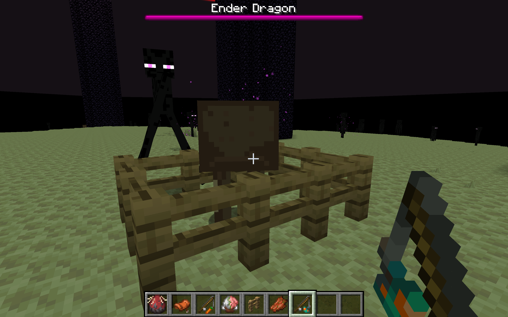
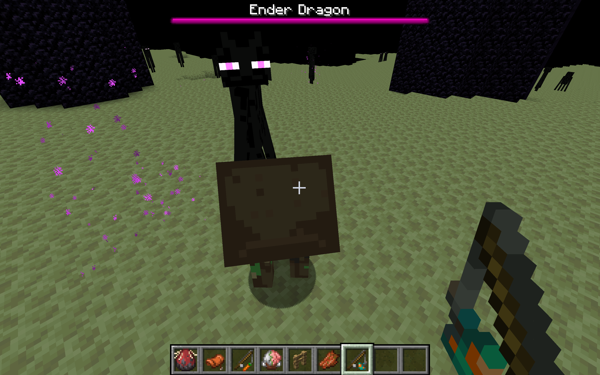
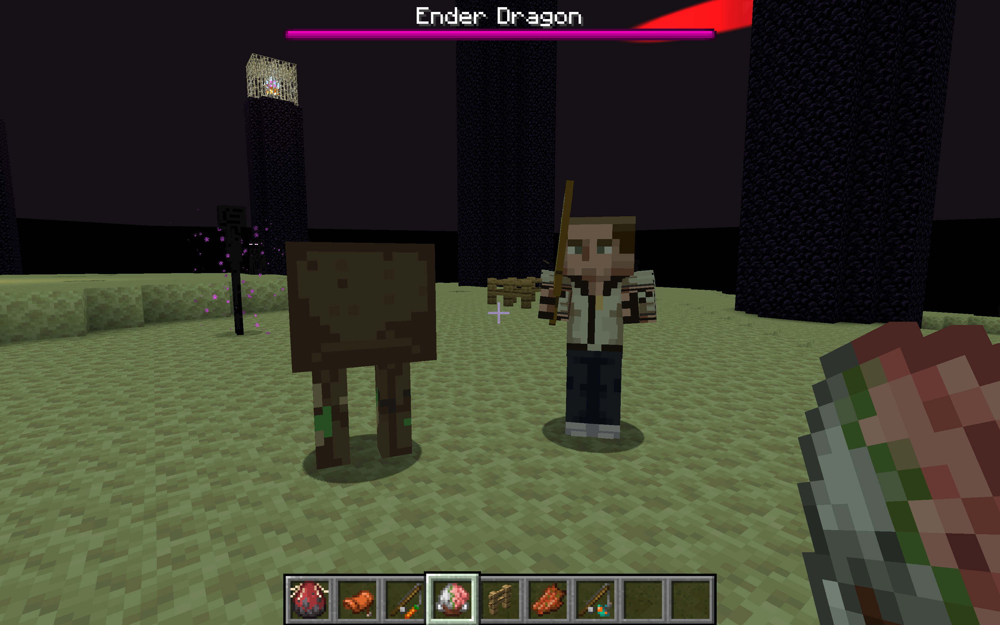

Project Hail Minecraft
A cinematic Minecraft shader pack inspired by Project Hail Mary, focused on color grading, glow, haze, screen-space particles, and interactive environmental lighting.

Overview
For our final project, we created a custom Minecraft shader pack inspired by the visual world of Project Hail Mary. Our goal was to transform normal Minecraft gameplay into a cinematic science-fiction environment using post-processing effects, color grading, glow, haze, dust, and localized light-based environmental changes.
Our project focuses on the idea that shader effects can act as both technical rendering tools and storytelling tools. By modifying the final image produced by Minecraft, we were able to create a darker, more dramatic visual style without rewriting Minecraft’s rendering engine. The final result includes a red Petrova Line-inspired scene, screen-space particle effects, a glowing light stream, and a Planet Adrian-inspired green atmosphere in the End dimension.
Motivation
Our project was motivated by the cinematic atmosphere of Project Hail Mary, especially the visual contrast between space darkness, glowing red energy, and alien planetary environments. We wanted to explore how much of that mood could be recreated inside Minecraft using shader programming rather than custom models or a separate rendering engine.
Minecraft is normally bright, blocky, and visually simple. This made it a useful base environment because any shader change is immediately visible. By pushing the color palette toward red, adding glow and haze, and simulating particles in screen space, we could make the same Minecraft world feel more like a science-fiction scene.
Technical Approach
Our project was built as a custom Minecraft shader pack using the Iris shader workflow. Instead of changing the Minecraft engine directly, we worked within the shader pipeline so that our effects could be applied as real-time visual modifications on top of the already-rendered game world. This made the project more practical because we could focus on controlling the final image seen by the player rather than rewriting Minecraft’s rendering system.
The main file we worked with was shaders/composite.fsh. This fragment shader is responsible
for full-screen post-processing: it reads the rendered scene from colortex0, modifies the
pixel colors, and outputs the final image to the screen. Because this stage happens after Minecraft has
already rendered the world geometry, it gave us a flexible place to apply cinematic color grading,
screen-space glow, haze, vignette, dust, and atmospheric effects.
We started with a simple grayscale shader tutorial to understand how the composite pass works. From there, we modified the RGB channels directly to create a red-tinted cinematic grade. This helped us learn that many large visual changes can be created by remapping color values at the final screen stage. For example, increasing the red channel while reducing or compressing green and blue values made the scene feel darker, warmer, and more dangerous, which matched the Petrova Line and Astrophage mood we wanted.
After establishing the base color grade, we layered additional post-processing effects. The haze effect softens distant areas of the screen and helps make the environment feel less like normal Minecraft and more like a cinematic sci-fi scene. The glow effect emphasizes bright regions, especially the stream of light, so that it feels like an intense energy source rather than a normal Minecraft light. We also added vignette darkening around the edges of the screen to focus the player’s attention toward the center of the frame and make the final image feel more film-like.
For the Petrova Line effect, we focused on building the illusion of a powerful red light stream. We used screen-space techniques to add small particles, glitter, dust, and atmospheric noise without rendering thousands of real 3D particle objects. This was an important design choice because true volumetric particles would be much more expensive and harder to control in real time. By approximating the particles in post-processing, we were able to create a similar visual feeling while keeping the shader lightweight enough for gameplay.
One of our key technical features was a localized environmental color shift. We programmed the world to gradually become more red as the player moves closer to a designated stream of light. Conceptually, this acts like a distance-based shader response: the closer the camera or player is to the light source, the stronger the red grading, haze, and glow become. This helped us connect the visual effect to player movement, making the shader feel interactive rather than just a static filter over the screen.
We also created a second environment inspired by Planet Adrian by modifying the End dimension to produce a green atmospheric look. This required tuning the same general shader ideas in a different direction: instead of emphasizing crimson light, we adjusted the color palette toward green, yellow, and hazy tones. This showed that our shader pipeline was reusable and could support multiple visual moods depending on how the post-processing parameters were adjusted.
Throughout implementation, we balanced visual quality with performance. Since Minecraft needs to remain interactive, we avoided techniques that would require expensive geometry changes or physically accurate volumetric simulation. Most of our effects are calculated in screen space using the final rendered image, which keeps the shader relatively efficient. This approach allowed us to prioritize the cinematic style of the final image while still preserving smooth player movement and responsive gameplay.
Implementation Details
Shader Pipeline Setup
We first set up the Minecraft shader development environment and familiarized ourselves with the Iris
shader workflow. We learned that shader packs need to be placed inside Minecraft’s shaderpacks folder,
while the development repository can remain separate. On Windows, this shaderpacks folder is located in
the hidden %appdata%\.minecraft\shaderpacks directory.
Color Grading
The color grading system works by modifying the RGB output values in the composite shader. Our red version increases the strength of red tones while suppressing some green and blue tones. This creates a crimson cinematic appearance that changes the emotional tone of the scene.
Glow, Haze, and Vignette
We layered several post-processing effects on top of the color grade. The glow effect makes bright areas feel more energetic, the haze effect creates atmospheric depth, and the vignette darkens the edges of the frame. Together, these effects make the image feel less like unmodified gameplay and more like a composed film shot.
Screen-Space Particle Effects
To approximate Astrophage-like particles and dust, we used screen-space visual noise and small glitter effects. This approach does not physically simulate particles in the world, but it creates the feeling of suspended dust and energy around the red light stream. Since it is a post-processing approximation, it is cheaper than rendering many individual 3D particles.
Interactive Localized Lighting
The localized red-shift effect makes the shader feel more interactive. As the player approaches the designated stream of light, the visual intensity increases. This creates the feeling that the player is entering a hazardous or high-energy region, instead of simply viewing a constant filter across the entire world.
Final Features
- Custom crimson cinematic color grading
- Post-processing glow and haze effects
- Screen-space glitter, dust, and particle-like visuals
- A large red swirled sky and red sphere inspired by Project Hail Mary reference imagery
- Localized red environmental shift based on player distance to a stream of light
- A modified End dimension inspired by Planet Adrian’s green atmosphere
- Real-time gameplay-focused implementation using lightweight screen-space effects
Results
Our final shader successfully changes the mood and visual identity of Minecraft while maintaining smooth gameplay. The Petrova Line-inspired scene uses a red cinematic grade, bright light stream, haze, glow, and small particle-like details to create a sci-fi atmosphere. Compared to vanilla Minecraft, the final image feels darker, more dramatic, and more focused around the central light source.
We also created a Planet Adrian-inspired environment by modifying the End dimension into a green atmospheric scene. This demonstrates that the same shader pipeline can support different fictional environments by changing color grading, haze, and sky effects.


Comparison to Vanilla Minecraft
Vanilla Minecraft uses a brighter and more neutral visual style. Our shader changes the experience by adding strong atmospheric mood through red and green color grading, glow, haze, vignette, and screen-space visual effects. These changes make the scene feel more cinematic and less like the default Minecraft environment.
The main tradeoff is that our approach is not physically accurate. The particles and haze are approximations rather than full volumetric simulations. However, this tradeoff allowed us to maintain real-time performance and keep the shader practical for interactive gameplay.

Additional Rendered Scenes
We also tested the shader in several gameplay situations to make sure the effect still worked from different camera positions. These tests helped us evaluate whether the shader remained readable during normal interaction, close-up views, and wide environmental shots.


Performance
During testing, our shader did not introduce noticeable delay or major frame drops compared to regular Minecraft or standard shader packs. Since most of our effects are screen-space post-processing effects, they are relatively lightweight. Instead of using expensive geometry-heavy or volumetric techniques, we focused on visual approximations that still communicate the intended atmosphere.
This performance choice was important because Minecraft is interactive. A shader that looks good but makes the game difficult to move through would not meet our project goals. Our final implementation prioritizes smoothness, responsiveness, and real-time visual feedback.
Reflection on Progress
Relative to our original project schedule, we stayed on track. We completed our setup goals, built the foundational shader pipeline, implemented the core color shifts, and developed the aesthetic foundation for the Petrova Line and Planet Adrian scenes. We also responded to feedback by focusing on clearer benchmark scenes and side-by-side visual comparison.
One challenge was deciding how much physical accuracy to pursue. True 3D particles, volumetric lighting, and physically accurate atmospheric scattering would have been more complex and expensive. We chose to focus on screen-space approximations because they better matched the time constraints of the project and the need for real-time gameplay.
What We Learned
This project showed us how much visual style can be created through shader post-processing alone. We
learned how Minecraft shader packs are structured, how Iris processes shader folders, and how the
composite.fsh pass can be used to transform the final screen image.
We also learned that visual effects such as haze, glow, dust, and color grading can communicate atmosphere and story even when they are approximations rather than physically accurate simulations. A red shader can make the world feel dangerous and cinematic, while a green atmospheric grade can suggest an alien planet. This helped us understand graphics techniques as tools for both rendering and visual storytelling.
Division of Labor
- Nicholas Angelici: Shader setup, technical implementation, and testing.
- Kathleen Hua: Visual design, reference matching, and presentation materials.
- Mandy Pham: Write-up, demo organization, visual comparison, and presentation script.
- Sophia Prakasa: Shader tuning, scene design, and documentation support.
Final Deliverables
Our final deliverables include the project webpage, presentation slides, and demo video.
References
- Project Hail Mary visual reference images.
- Minecraft Iris shader documentation and tutorial workflow.
- CS184/284A final project guidelines.